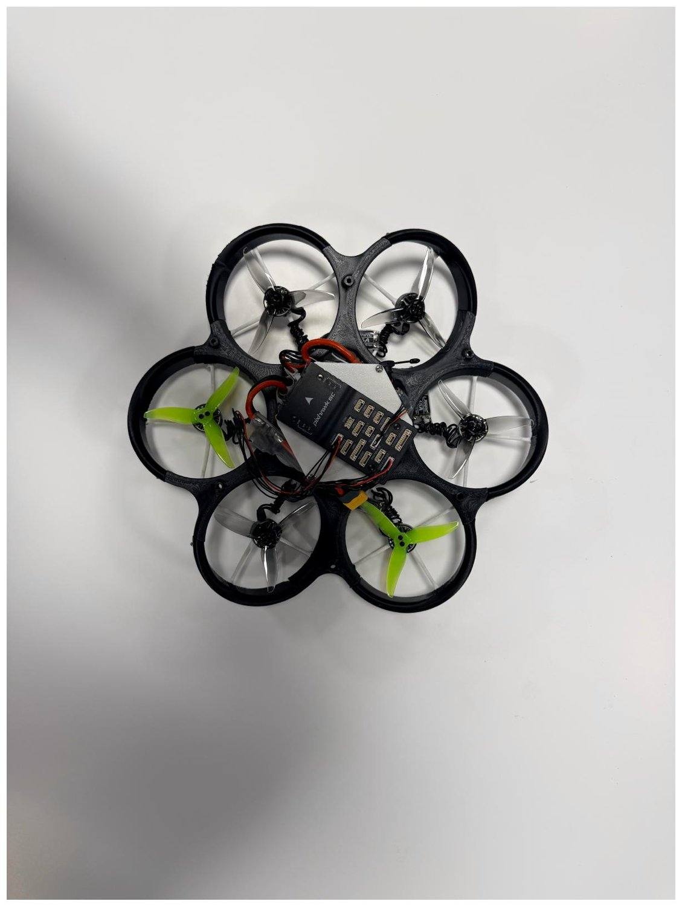
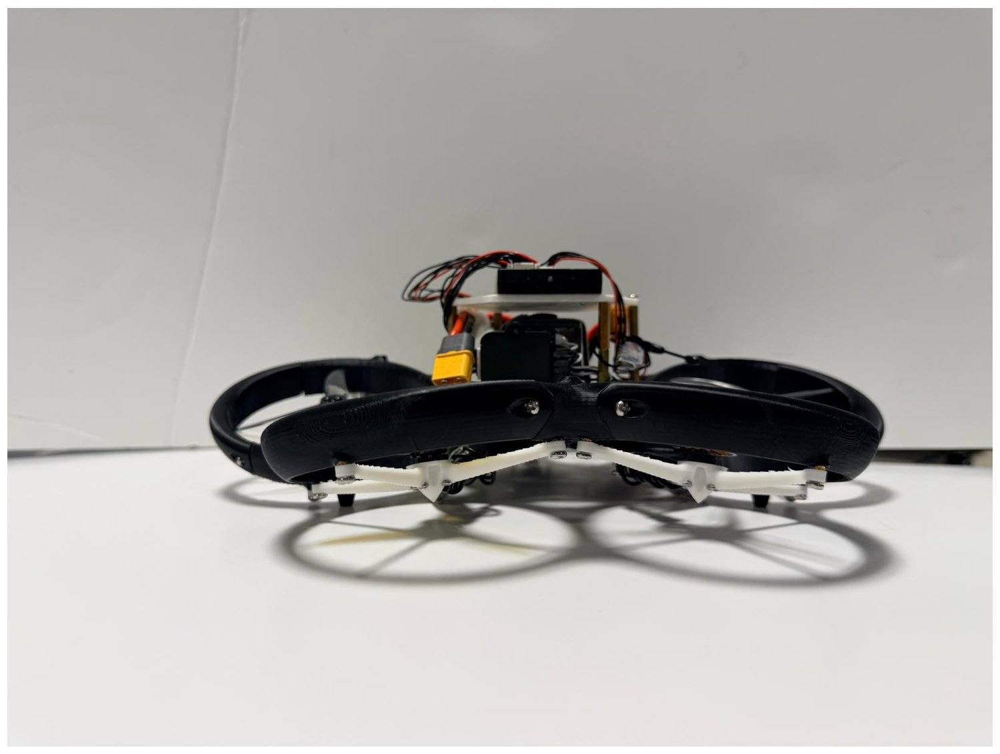
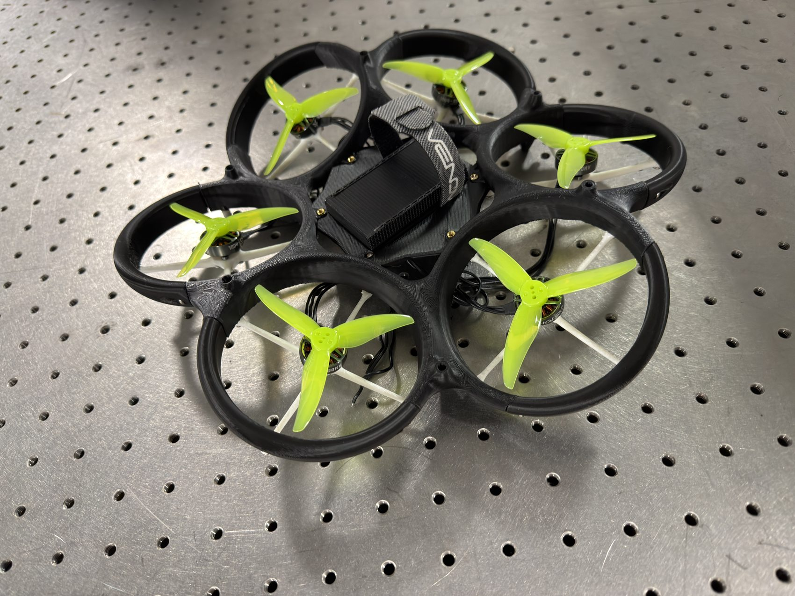
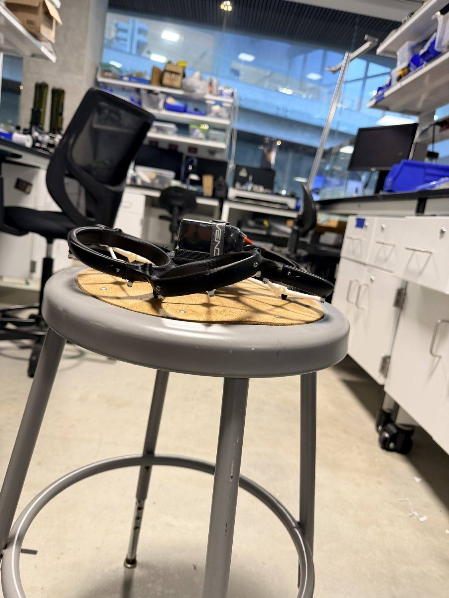
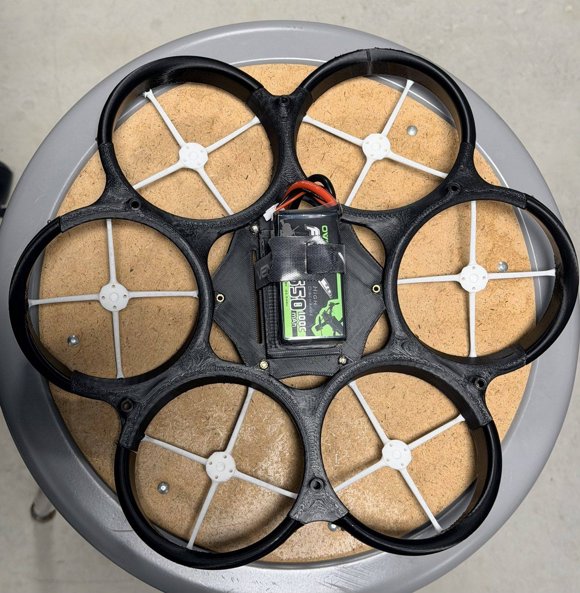

The idea
Most drones are under-actuated. Four rotors all point the same way, so to move sideways the whole aircraft has to tilt first. That couples where it goes to how it is oriented.
This hexacopter is fully actuated. Its six rotors sit at fixed cant angles, so together they can produce force and torque in all six degrees of freedom independently. It can slide sideways while staying level, hold a steady attitude while it translates, and keep a sensor pointed at a target instead of swinging it around. That makes it well suited to tracking something or threading through a tight space like a tunnel. The fixed-tilt part matters too: the angles are built into the frame rather than driven by extra gimbal motors, so the geometry does the work and the aircraft stays light and simple.
What I built
I own this one end to end, from the first CAD sketch to flight tuning. The work splits into four pieces.
Airframe design
SolidWorks
The full six-rotor frame with the rotors canted at fixed angles, designed as a 3D-printed monocoque so the ducts and arms print as one stiff, light structure instead of many bolted parts.
Propulsion testing
Thrust stand
Measured thrust, torque, and efficiency for ducted versus un-ducted props on a thrust stand, because the ducts change how much thrust you get per watt, and used that to choose the rotor setup.
6-DoF flight controller
MATLAB
A state-space controller that commands all six degrees of freedom at once, derived and tuned in MATLAB before it ever leaves the bench, then mixed down to the six motor commands.
Flight testing
Motion capture
Brought up and tuned the controller in our motion-capture room, which gives ground-truth position and attitude to close the loop and check the aircraft behaves the way the model says it should.
How it works
Where to go
A desired position and attitude in all six degrees of freedom.
Flight controller
Runs the 6-DoF control law and mixes it into six individual motor commands.
Fixed-tilt geometry
The fixed cant angles turn those commands into force and torque in any direction.
A motion-capture system closes the loop during testing, feeding ground-truth pose back to the controller so it always knows exactly where the aircraft is.
From build to flight
Same aircraft, a few months apart: bare airframe and exposed electronics, then props on and flight-ready. Tap either photo to enlarge.


Tech
Gallery








More
The flight-control code lives on GitHub, and there is more of my work on the main site.